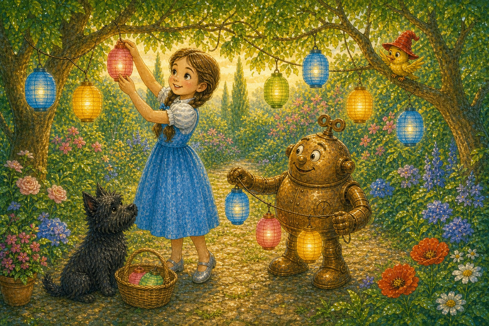
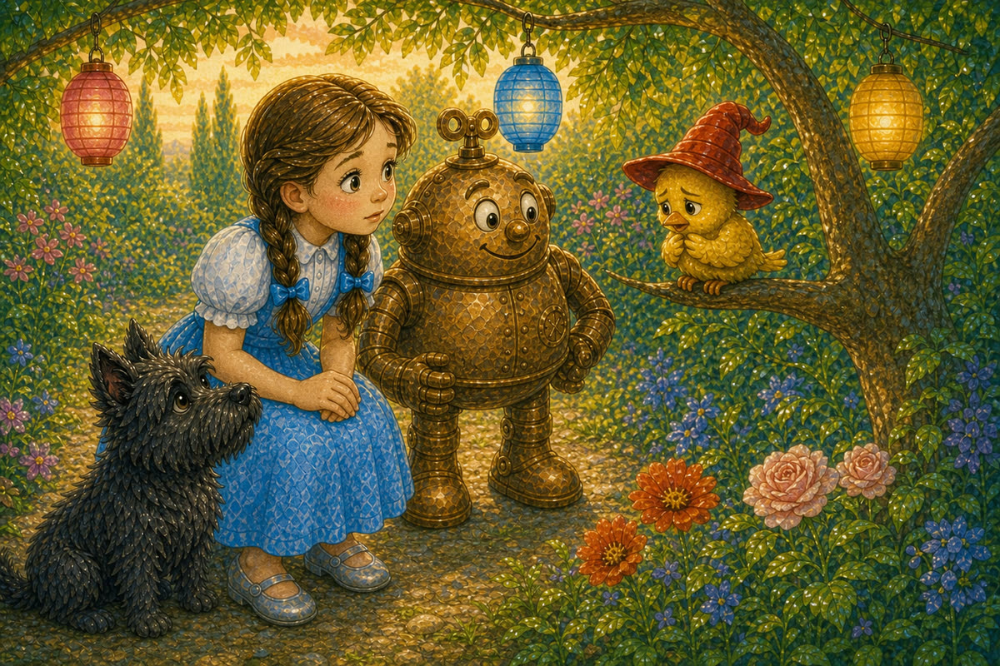
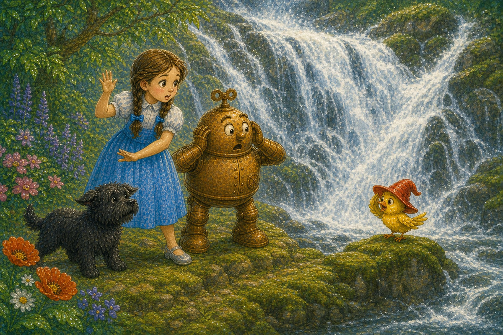
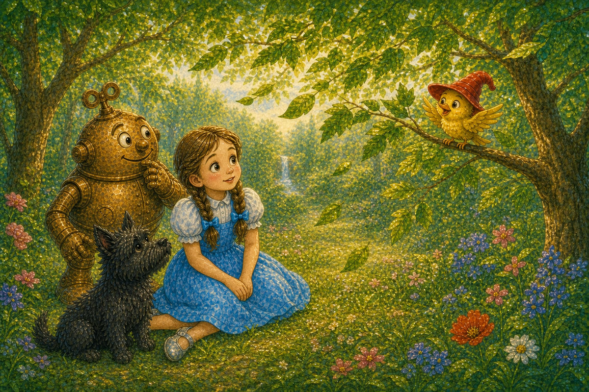
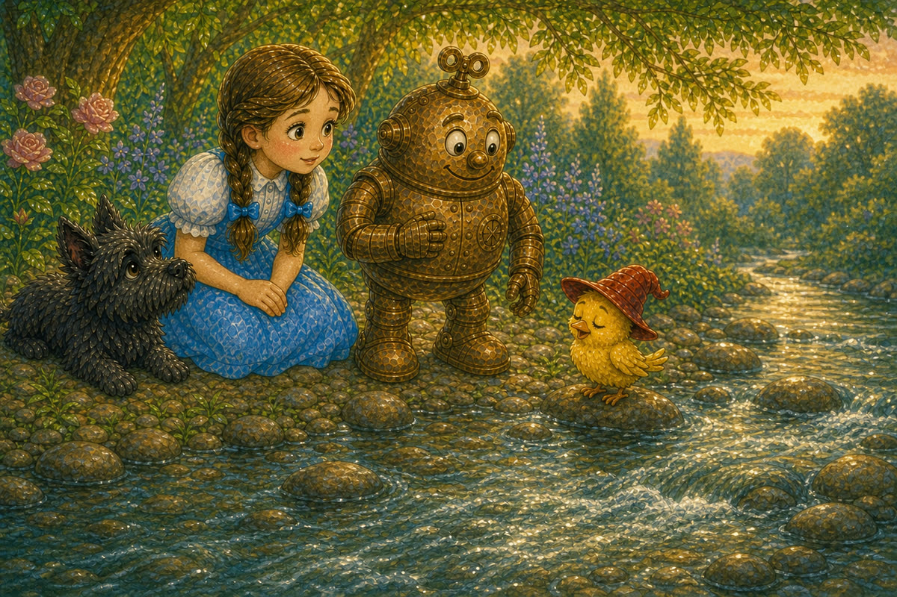
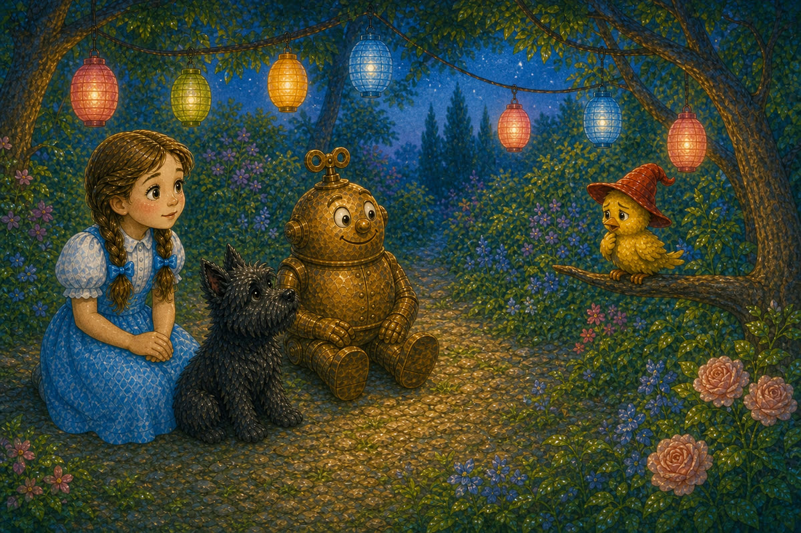
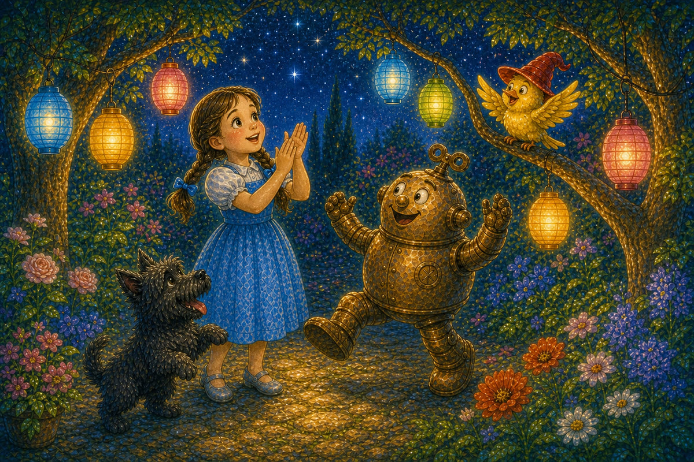

Pahina 1
Isang hapon, naghanda ang magkakaibigan para sa munting salu-salo sa hardin.
Nagsabit sila ng makukulay na ilaw sa mga puno.
Isang bagong kuwento sa Lupain ng Oz
Basahin ang tatlong bagong pahina bawat araw. Bago magpatuloy, balikan muna ang mga pahinang nabasa na.

Isang hapon, naghanda ang magkakaibigan para sa munting salu-salo sa hardin.
Nagsabit sila ng makukulay na ilaw sa mga puno.
Aawit ang maliit na ibon para sa lahat.
Ngunit bigla itong tumahimik.
“Nakalimutan ko ang aking awit,” malungkot nitong sabi.

Lumapit si Dorothy.
“Tutulungan ka namin. Makikinig tayo sa mga tunog sa paligid.”
Sumama sina Toto at Tik-Tok sa paghahanap.
Una, pumunta sila sa malaking talon.
Malakas ang lagaslas ng tubig.
Sinubukan ng ibon na umawit, pero hindi nito marinig ang sariling tinig.

“Masyadong maingay dito,” sabi ni Dorothy.
Lumayo sila sa talon.
Sa ilalim ng mga puno, marahang gumalaw ang mga dahon sa hangin.
Nakinig ang ibon sa kaluskos ng mga dahon.
Humuni ito nang kaunti.
“Magandang tunog iyan,” sabi ni Tik-Tok.
Ngumiti ang ibon.

Pagkatapos, naglakad sila sa tabi ng ilog.
Tahimik na dumaloy ang tubig sa ibabaw ng maliliit na bato.
Nakinig silang lahat.
Tik-tak, tik-tak ang tunog ni Tik-Tok.
Sinabayan ng ibon ang agos ng tubig at ang mahinang tik-tak.
Unti-unting nabuo ang isang himig.

Bumalik sila sa hardin.
Umupo ang mga kaibigan. Tahimik silang lahat.
Huminga nang malalim ang ibon.
Sinimulan nito ang munting awit.

Pagkatapos ng unang linya, huminto ang ibon.
Hindi nagsalita ang mga kaibigan.
Naghintay lamang sila.
Muling narinig ng ibon ang mga dahon, ilog, at tik-tak.
Biglang naalala ng ibon ang kasunod na himig.
Malinaw at masaya itong umawit.
Pumalakpak si Dorothy.
Tumahol si Toto.
Sumayaw si Tik-Tok.

Nagliwanag ang mga ilaw sa hardin.
Umawit muli ang maliit na ibon, at sumabay ang lahat.
Sa ilalim ng mga bituin, natapos ang kanilang masayang salu-salo.
Pag-usapan natin